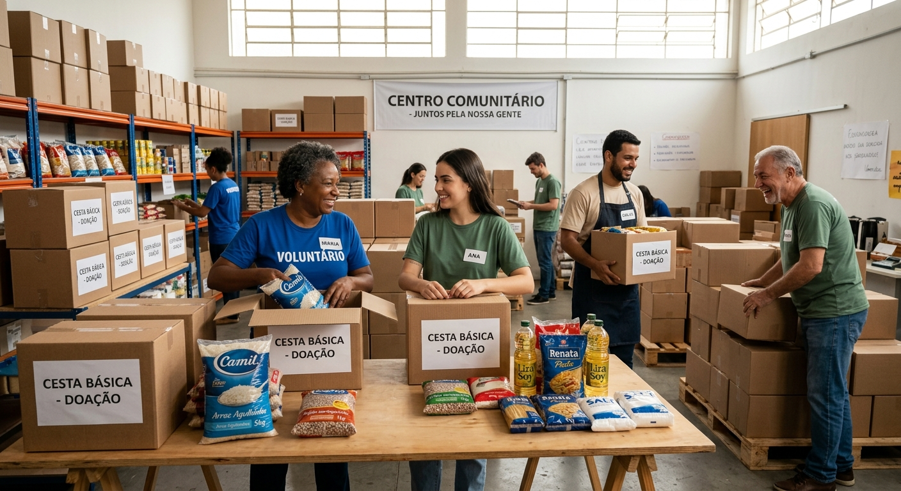
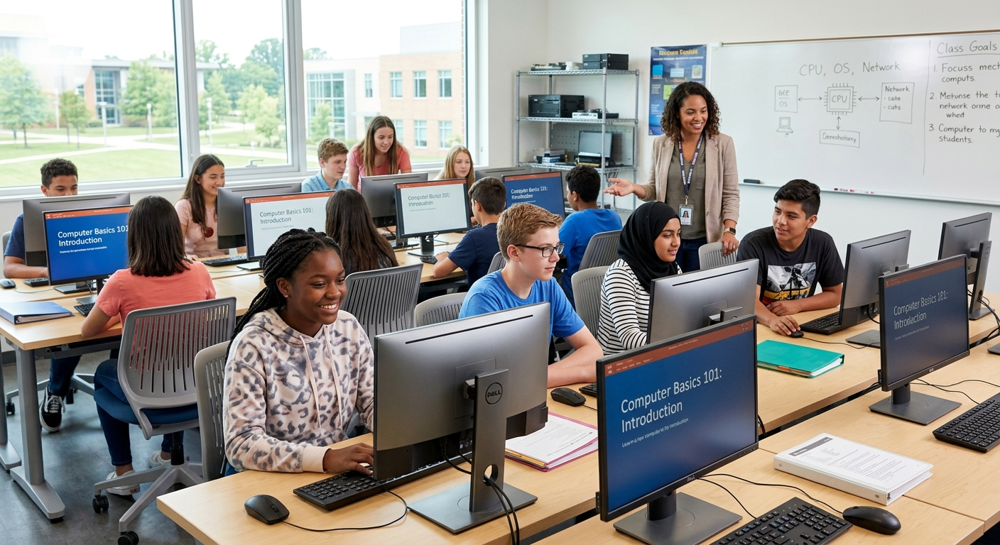

Projeto Prato Cheio

O Projeto Prato Cheio atua no combate à insegurança alimentar. Realizamos o mapeamento de famílias vulneráveis e a distribuição mensal de cestas básicas e itens de higiene pessoal.
Como conduzimos as campanhas de doação:
Nossas campanhas acontecem em ciclos mensais com total transparência:
- Arrecadação e Parcerias: Aceitamos doações presenciais em nossa sede, doações financeiras via PIX e parcerias com supermercados e produtores locais.
- Triagem e Montagem: Equipes de voluntários organizam os mantimentos, verificam prazos de validade e montam cestas padronizadas para suprir as necessidades nutricionais das famílias.
- Entrega Transparente: As entregas são feitas diretamente nas comunidades cadastradas, com prestação de contas detalhada publicada periodicamente em nossos relatórios institucionais.
Como se envolver como voluntário:
Você pode atuar na triagem e separação dos alimentos, na logística de transporte e entrega nas comunidades, ou na divulgação e captação de novos doadores.
Futuro Digital

O Futuro Digital tem como objetivo democratizar o acesso à tecnologia e preparar jovens da rede pública de ensino para o mercado de trabalho através de oficinas de capacitação técnica.
Como as atividades são ministradas:
O projeto oferece turmas semestrais gratuitas que abrangem desde os conceitos fundamentais até a lógica de desenvolvimento:
- Informática Básica e Ferramentas de Escritório: Uso do sistema operacional, digitação, navegadores e criação de documentos e planilhas.
- Introdução à Lógica e Desenvolvimento Web: Conceitos básicos de lógica, HTML, CSS e noções de programação para instigar a carreira em tecnologia.
- Mentoria e Orientação Profissional: Oficinas para elaboração de currículos e preparação para os primeiros processos seletivos e vagas de jovem aprendiz.
Como se envolver como voluntário:
Procuramos voluntários para atuar como instrutores das oficinas, monitores de apoio em sala de aula, mentores de carreira ou para auxiliar na manutenção e formatação dos computadores do laboratório.